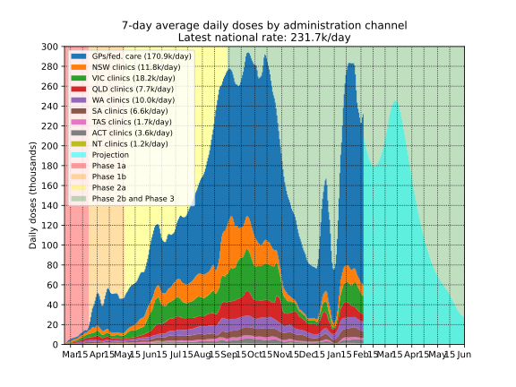
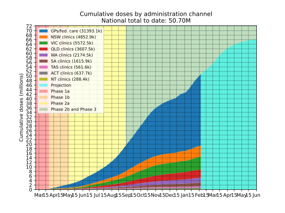
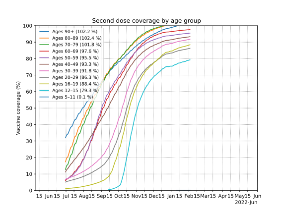
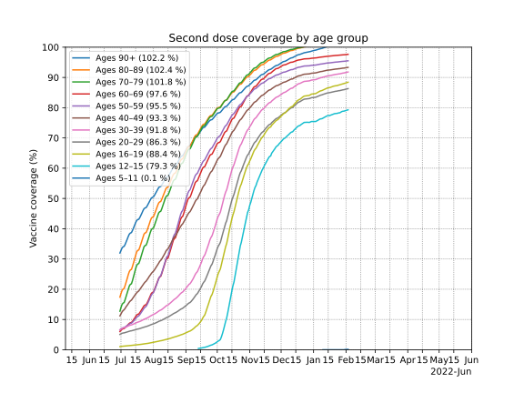
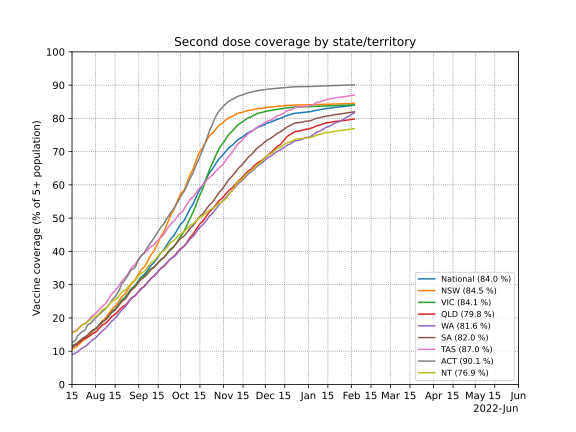
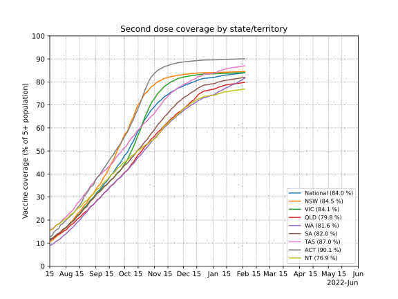
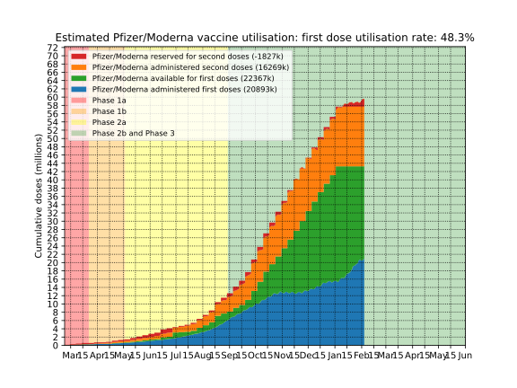

Updates daily in the afternoon
Australian COVID-19 vaccination rollout
New: Progression of the COVID outbreak in New Zealand
New: Progression of the COVID outbreak in Victoria
New: Progression of the COVID outbreak in the Australian Capital Territory
See also: Progression of the COVID outbreak in New South Wales
See also: The road to a COVID-free Victoria (old 2020 second wave plots)
Contents
Daily doses by administration channel
Below is a plot of 7-day average of daily vaccine doses administered in Australia by administration channel, showing the daily number of doses administered by state vaccination clinics, and by GPs and in federally operated aged and disability care. The 7-day average is further smoothed to remove day-to-day random fluctuations using Gaussian smoothing with σ=1 days.
Projected doses are based on expected supply smoothed over several weeks after supply becomes available, the asumption that second doses are reserved and administered on time as described in the Estimated utilisation section, and allowing for 12.5% wastage of AZ and 5% wastage of Pfizer/Moderna.
Data note 1: 80,560 GP-administered doses were reported on April 19th that were administered "prior to April 17". These have been incorporated into the data by spreading them over the period from March 22nd (start of phase 1b) to April 16th in proportion to the daily rate of GP-adminsitered doses on each day.
Data note 2: A correction to of -9,260 doses to VIC's state-clinic numbers was made on May 25th. These have been incorporated into the data by spreading them over the period from March 22nd (start of phase 1b) to April May 23rd in proportion to the daily rate of VIC state-clinic-adminsitered doses on each day.
Daily doses by weekday
Below is a plot of national daily doses by weekday, for the past five weeks. No averaging or smoothing has been done.
Data note: there was a +65k data correction made on Sunday August 17th

Cumulative doses
Below is a simple plot of cumulative doses in Australia over time by administration channel, showing the cumulative number of doses administered by state vaccination clinics, and by GPs and in federally operated aged and disability care. Australia aims to vaccinate all eligible people with at least one dose by the end of 2021.
Projected doses are based on expected supply smoothed over several weeks after supply becomes available, the assumption that second doses are reserved and administered on time as described in the Estimated utilisation section, and allowing for 12.5% wastage of AZ and 5% wastage of Pfizer/Moderna.
First and second dose coverage by age group
Below are plots of the percentage of each 10-year age group that has had a first and second administered, as well as the weekly rate of uptake as a percentage of each age group. Note that first dose data by age group is only available from May 9th, and second dose data from June 30th.
 



First and second dose coverage by state/territory
Below are plots of the percentage of the resident population aged 16+ in each state/territory that has had a first and second dose administered, as well as the weekly rate of uptake, as a percentage of each state/territory's age 16+ population.
 



Longer-term projections
Below is a possible scenario for the vaccination program over the course of the year. This assumes that we keep up with supply, administering doses in the weeks following them becoming available, up until 21.85M people (the number of people in Australia aged 12+) have been vaccinated, with a maximum of 7.55M people receiving the AstraZeneca vaccine.
This assumes second doses are reserved and administered on time as described in the Estimated utilisation section, and allows for 12.5% wastage of AZ and 5% wastage of Pfizer/Moderna.
Approximate expected supply of mRNA vaccines (based on the federal allocation horizons document here, as well as other comments made in press conference) is 1125k per week in August, then 1M Pfizer plus 200k Moderna per week in September, then 2M Pfizer plus 750k Moderna per week starting in October.
Expected supply of the AstraZeneca vaccine is 1M doses per week.


Estimated utilisation
Below is a plot of the estimated status of each vaccine dose in Australia. How many doses are in people's arms, in reserve, or available? This helps show whether administration of doses is keeping up with supply. Since the government has not published data to determine this exactly, this estimate is based on a number of assumptions:
- That the number of Pfizer/Moderna and AstraZeneca first doses administered on a given day is in proportion to the number of available doses of each type of vaccine on that day, weighted by a "demand factor" equal to 2.0 for Pfizer and 1.0 for AstraZeneca.
- That prior to May 27th, 50% of Pfizer supply is held in reserve for second doses, and after May 27th, that a Pfizer/Moderna reserve is maintained equal to 40% of outstanding second doses. Pfizer/Moderna second doses are administered exactly 25 days after the first dose (Pfizer should be 21 days and Moderna 28m, but I'm treating them the same for simplicity),
- Prior to mid-April, that 50% of AstraZeneca supply is held in reserve for second doses. After mid-April (when the government became confident enough in local supply to maintain a smaller reserve), that a reserve is maintained with a number of doses equal top 66% of all outstanding second doses. AstraZeneca second doses are administered exactly 11 weeks after the first dose. (for most people, this is 12 weeks, but for some in areas with active outbreaks it is much earlier, so I'm using an intermediate value to approximate both situations)
- That doses becoming available in a given week (supply data is only available at the 1-week level) become available at the end of that week.
- That 12.5% of of AZ and 5% of Pfizer/Moderna doses are wasted (these are not shown in the utilisation plots).

Estimated utilisation by vaccine type
Below is the same utilisation estimates as in the above plot, but separated by vaccine type: AstraZeneca vs Pfizer/Moderna (which are lumped together).

Data sources and contact
Source for vaccine supply and expected supply: covid19data.com.au
Source for daily/cumulative dose numbers: covidlive.com.au.
Source for first doses by age group prior to June 30th: Department of Health, data extracted from government materials by covidbaseau.com.
Source for first and second doses by age group from June 30th: Department of Health, data extracted from government materials by Ken Tsang
Population data from the Australian Bureau of Statistics Estimated Resident Population, June 2020
Plots and analysis by Chris Billington. Contact: chrisjbillington [at] gmail [dot] com
Python script for producing the plots is available on GitHub.